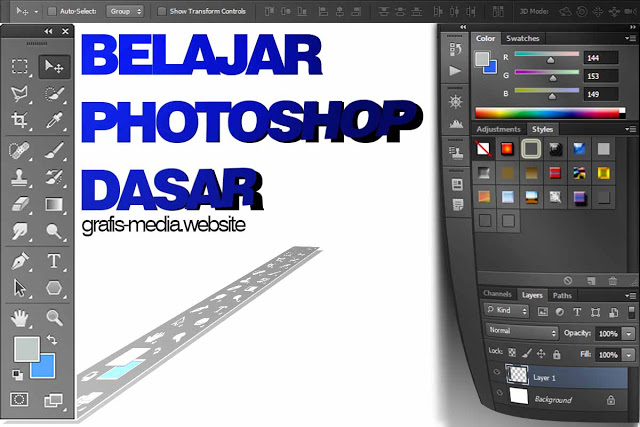

E-Vocaducation
website pembelajaran yang khusus ditujukan kepada siswa sekolah menenga kejuruan untuk mendampingi belajar mereka
website pembelajaran yang khusus ditujukan kepada siswa sekolah menenga kejuruan untuk mendampingi belajar mereka
ditulis oleh TIM E-vocaducation.pada 09-10-2019
Mengenai sejarah singkat Adobe Photoshop, software atau aplikasi Adobe Photohop pertama kali dibuat pada tahun 1987 oleh seorang mahasiswa PhD di Universitas Michigan, yaitu Thomas Knoll. Ketika itu aplikasi tersebut diberi nama Display yang dapat atau mampu menampilkan gambar grayscale pada layar monokrom. Hal tersebut membuat tertarik seorang karyawan Industrial Light & Magic, yaitu John Knoll saudara dari Thomas Knoll. John menyarankan Thomas untuk mengembangkan Display menjadi aplikasi penyunting gambar secara keseluruhan dan mengganti namanya menjadi ImagePro. Pada tahun 1988 dimulailah kerjasama antara dua bersaudara tersebut. Thomas merubah nama aplikasinya menjadi Photoshop dan bertugas mendistribusikan salinannya. Sedangkan John mendemonstrasikan aplikasi Photoshop kepada dua perusahaan sekaligus, yaitu Adobe dan Apple yang berada di Silicon Valley - California. Adobe tertarik dan membeli lisensi Photoshop serta mendistribusikan aplikasi Adobe Photoshop pada Septermber 1988.
Sampai sekarang aplikasi atau perangkat lunak Adobe Photoshop menjadi aplikasi yang populer dengan kemampuannya untuk mempersunting atau mengedit gambar dan foto yang bertipekan gambar raster atau bitmap. Sejarah perkembangan software Adobe Photoshop sangat panjang, mulai dari versi pertama pada tahun 1988. Pada tahun 2003 Adobe Photoshop telah berada pada versi 8.0, versi tersebut memiliki nama versi yaitu CS yang mempunyai kepanjangan atau arti Creative Suite. Nama versi CS terus berlanjut dan meningkat disertai berkembangnya aplikasi Adobe Photoshop. Namun pada tahun 2012 tepatnya pada versi 13 yang bernama versi CS6, adalah waktu berakhirnya penggunaan nama versi Creative Suite karena pada tahun 2013 Adobe Photoshop merubah nama versinya menjadi CC yang berarti Creative Cloud.